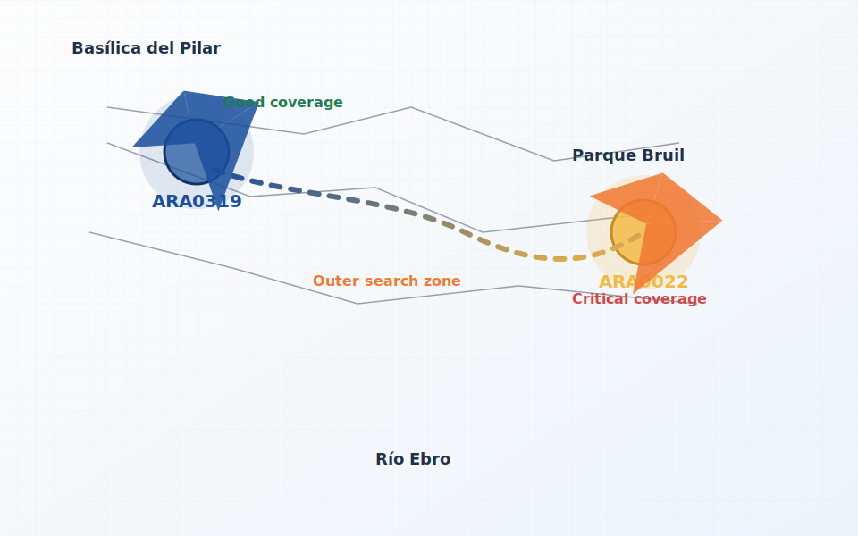

Escenarios de cobertura y ajuste de evento A3

Configuración de la condición A3
Ajusta los parámetros para la expresión de activación de reportes A3. Los offsets se expresan en décimas de dB y las medidas RSRP en dBm.
RSRPtarget - RSRPsource > ReportConfigEUtraBestCell.a3offset/10 + EUtranFreqRelation.a3RsrpFreqOffsetAdjustment/10 + EUtranFreqRelation.eUtranFreqToQciProfileRelation<qci>.a3RsrpFreqQciOffsetAdjustment/10 + ReportConfigEUtraBestCell.hysteresisA3/10 - EUtranCellRelation.cellIndividualOffsetEUtran
Resultado actual: pendiente de cálculo.
Simulación del trayecto
Observa la evolución de la cobertura dominante a medida que el usuario avanza desde la estación ARA0319 hacia ARA0022. El indicador se actualiza dinámicamente con la mejor celda estimada y recomendaciones sobre las acciones de medición.
Estado de cobertura estimado
El usuario se encuentra en la zona de máxima cobertura de la estación ARA0319.
Tabla de eventos de referencia
| Evento | Propósito principal | Condiciones | Tipo de comparación | Uso típico |
|---|---|---|---|---|
| Cargando datos de eventos... | ||||